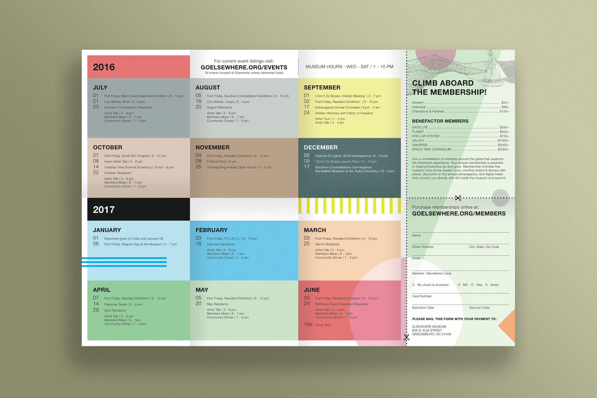
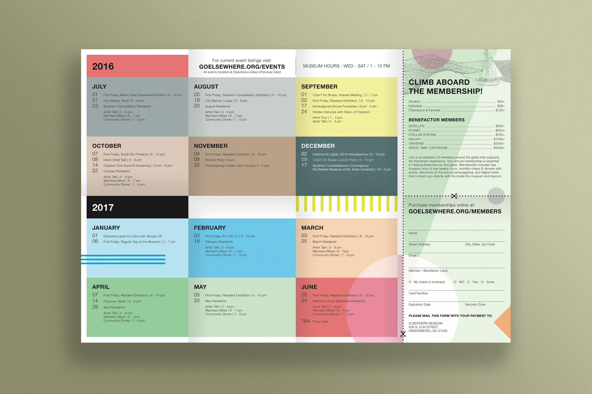

Appallitics
Educational | The Iron Yard | 2017
Final Design
Tools Used: pen + paper, Illustrator, HTML, CSS, Javascript, jQuery, GitHub Collaboration
Find My Coffee
Educational | The Iron Yard | 2017
Final Design
Tools Used: pen + paper, Illustrator, Sketch, Invision
For this project, students were tasked with designing one feature of a mobile app for a coffee retailer, using either a prexisting or fictional brand. I chose to design for Counter Culture Coffee, a local roaster and distributor from Durham, NC, with a national retail network.
We began the process researching brand character, target audience and creating a SWOT (Strengths, Weaknesses, Opportunities, Threats) analysis of the product/company. It's clear that the company is driven by a creative and meticulous approach to coffee making. Their attention to detail and refined packaging are reflections of their brand ethos, dedication to quality, innovation and sustainability.
Where I felt there was room for improvement was in their ability to attract new customers, specifically those without a preexisting palette who would have difficulty distinguishing between the vast array of flavors and types of coffee offered. In attempts to solve this issue, I imagined the Find My Coffee app, which helps customers decide which coffee to buy based on their taste preferences. By answering a series of easy, yes-or-no questions the customer is able to hone in on a variety of coffee that suits them, without feeling put off by overwhelming options. Additionally, the bright colors used in the design serve to reinforce brand style and provide a fun user experience. For the project's final form, I created a clickable prototype demonstrating the flow of the app.
GoodReads Homepage
Educational | The Iron Yard | 2017
Final Design
Tools Used: pen + paper, Photoshop, HTML, CSS, Javascript, jQuery
For this project, students were tasked with redesigning the landing page of the GoodReads website. This was an exercise in taking a preexisting brand, identifying “pain points” within the current user experience and developing a redesign in response to those pain points.
Not having already used GoodReads, I came to the project with a fresh perspective. I was generally confused when first visiting the site; it was not immediately evident what their service provided to the user. Eventually, I figured out that GoodReads is a kind of online bookclub, a community for book lovers to come together, share reviews and encourage further reading.
After some analysis and brainstorming it became clear to me that, above all else, there needed to be a major shift in the visual presentation of information. The current site is replete with content and as a new user I was overwhelmed by what seemed like everything being forced on me at once. Taking inspiration from other popular video sites, I reimagined GoodReads with a consolidated menu system, easy-to-read distribution of content and a vivid “Recommended Reading” section as the main focus point of the landing page.
By redesigning these features, GoodReads becomes a much more accessible and recognizable service. The final product for this project was a mobile-responsive, semi-interactive webpage prototype that addresses the aforementioned pain points in my analysis.
Durham Arts Council
Educational | The Iron Yard | 2017
Final Design
Tools Used: pen + paper, Github Collaboration, Sketch, HTML, CSS, Javascript, jQuery
This project was our first collaborative experience at the Iron Yard. Students paired up to redesign a preexisting, local non-profit website of their choice. Together, my partner Isaiah Anderson (not related) and I chose the Durham Arts Council website. Having used the Arts Council site in the past myself, primarily to search for local arts opportunities and grants resources, I felt that I had insight from a user perspective on the effectiveness of the platform.
In our initial research phase, Isaiah and I perceived a number of issues with the current site that we wanted to address in our redesign. Among these were a lack of hierarchy of information, confusing and cluttered organizational structure, lack of cohesive branding and an unresponsive layout.
We began our process by establishing a style guide and color scheme, and creating wireframe designs for the desktop and mobile versions of the site, settling on a one-page design with easy navigation to each section. We divvied up the development tasks, each of us tackling different sections of the site, which we later merged together within one project folder to create the final design.
Working closely with another designer for this project proved challenging at times, having to adjust to another person’s workflow and make compromises with the concept and project direction. Ultimately the experience was satisfying and rewarding, a valuable lesson in working together as a team on a single project.
Third Uncle Records
Freelance | 2016 - Present
Based out of Indianapolis, IN, Third Uncle Records has released multiple projects from No One Mind in 2016. Serving dual roles as visual artist and musician, I've had the opportunity to craft design and illustration that closely match the sonic and emotional character of the music.
Partnering with the label in this way, where I'm able to assume an array of roles across media has become one of the most satisfying experiences of my creative career. Here I'm able to both develop my multi-disciplinary approach to art-making and represent the material through a unified brand.
Elsewhere Museum
Freelance | 2016
Elsewhere Museum is an artist residency and self-described "Living Museum" set within a former thrift store, in downtown Greensboro, NC. Elsewhere invites artists from around the world to utilize the "collection," reusing and reinterpreting the materials to create new and constantly evolving work. I had the honor to work with their team to design the 2016/2017 Museum/Residency Brochure.
I began the design process discussing concept, visual aesthetic and a timeline of deliverables with the Museum Director. From our discussion we set a number of goals to be implemented in the design. A main feature of the brochure is the large events calendar. Our goal was to have visitors who took the brochure with them to keep the calendar in plain sight on a regular basis as a reminder and reference for upcoming events. Our method for solving this was to try and make the brochure a kind of arts object itself, to encourage it staying pinned to walls, refridgerators and bulletin boards around the city.
The visual imagery, color pallette and organizational structure of the brochure are all references to the museum's physical space. Much like the real-world experience of being in the museum, the brochure brims with content, bordering on overwhelming but not to the extent that it becomes undigestable. The final design is folded in eighths and is viewable as either a booklet or a two-sided poster.
 

{kind=link}
{kind=link}
{kind=link}
{kind=link}